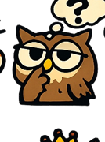

🌳 東大の森 v8
Arrow Hunter
🔥 連続
0
問正解！
任務だ！
この話の流れを見つけよう！
答えの前に、まず全体の流れをつかむんだ！

📄 問題用紙
この話は、どんな流れ？
⏳ 残り時間
15.0
秒
1
2
5
10
12
15
20
30
この話は、どんな流れ？
いちばん合っている矢印の流れを選ぼう！
うーん…どれかな？
流れをイメージしてみよう！
💡
ヒント！
つなぎ言葉や文の役割を見る。
🦉
パットのアドバイス
最初と最後の文に注目！
0
挑戦回数
0%
矢印正答率
-
最速
-
平均